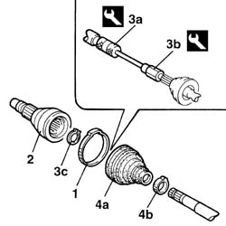
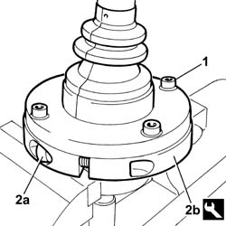

2710A20 WHEEL END CONSTANT VELOCITY JOINT (ONE), L/H OR R/H - R + R WITH DRIVE SHAFT REMOVED - INCLUDES BOOT REPLACEMENT
- Path
- Procedures > 27 AXLE > 2710 FRONT AXLE > 2710A DRIVE SHAFTS AND JOINTS > 2710A20 WHEEL END CONSTANT VELOCITY JOINT (ONE), L/H OR R/H - R + R WITH DRIVE SHAFT REMOVED - INCLUDES BOOT REPLACEMENT
- Kind
- repair procedure (removal / refitting; the operation number is the code)
- Applies to
- all engines; all production periods
- Interactive page
- https://sloeber94.github.io/elrnDB-fUlss/en/#/179007270
Applies to: all engines; all production periods
 Removing
Removing
 Refitting
Refitting- Position the driveshaft in a vice.
1. Remove the retaining band and move the protective gaiter back.
2. Remove the constant velocity joint from the driveshaft.
3. Clean the grease from the inner area housing the bearing then, using tools (3a) and (3b) and pliers on the circlip inside the joint simultaneously, remove the constant velocity joint bearing retaining ring (3c).
4. Then remove the protective gaiter (4a) by removing the retaining band (4b).
 | Description | Code | Function |
|---|---|---|---|
3a | Adapator | 1.846.061.000 | Front differential bearing removal |
| Description | Code | Function |
|---|---|---|---|
3b | Mallet | 1.847.017.001 | Front differential bearing removal |

Applies to: all engines; all production periods
Refitting
Removing- Check that the driveshaft is not distorted or off centre in the area where the joint is fitted and that the area in contact with the seal is not worn.
- Position the new protective gaiter on the driveshaft.
- Fit the bearing on the driveshaft.
- Fill the protective gaiter and the bearing with suitable grease.
- Position the constant velocity joint and fit it on the bearing by applying gentle pressure.
1. Position the tool on the band integral with the gaiter and screw in the upper plate retaining bolts without tightening.
2. Tighten the side bolts (2a) securing the two half-plates (2b) by screwing in to the end of their travel. The vulcanised band on the gaiter is now tightened to the intermediate drive shaft.
- Turn the tool through 90° and repeat the same operation to secure the other half of the band.
| Description | Code | Function |
|---|---|---|---|
2b | Rings for gaiters | 1.870.857.000 | Fitting driveshaft boot |
